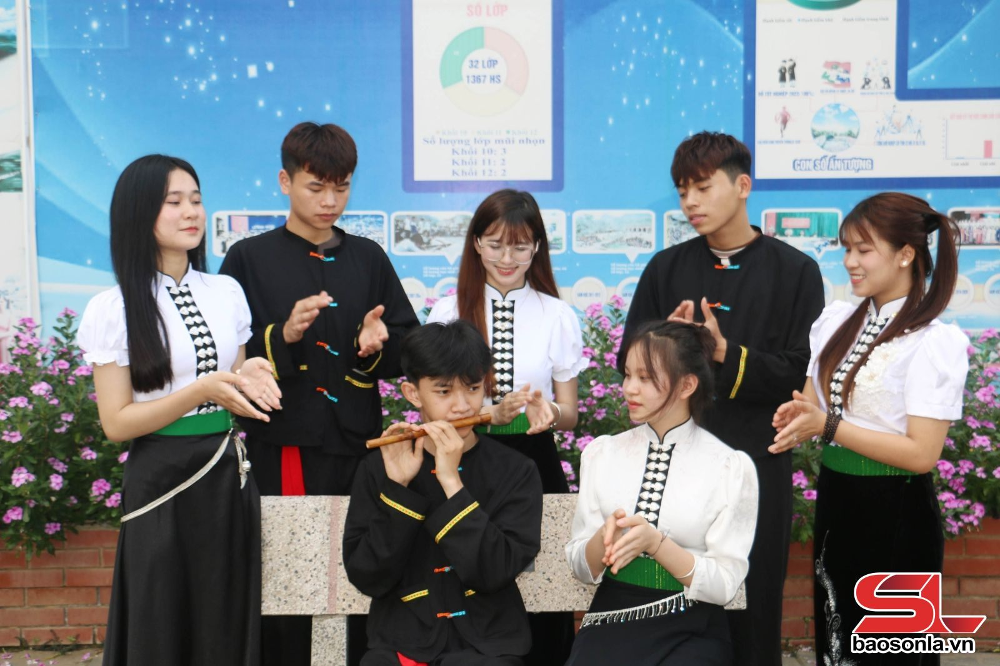
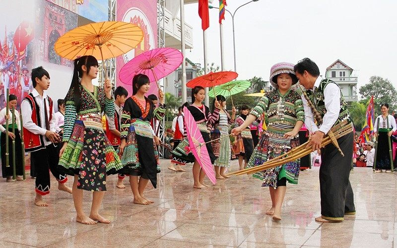
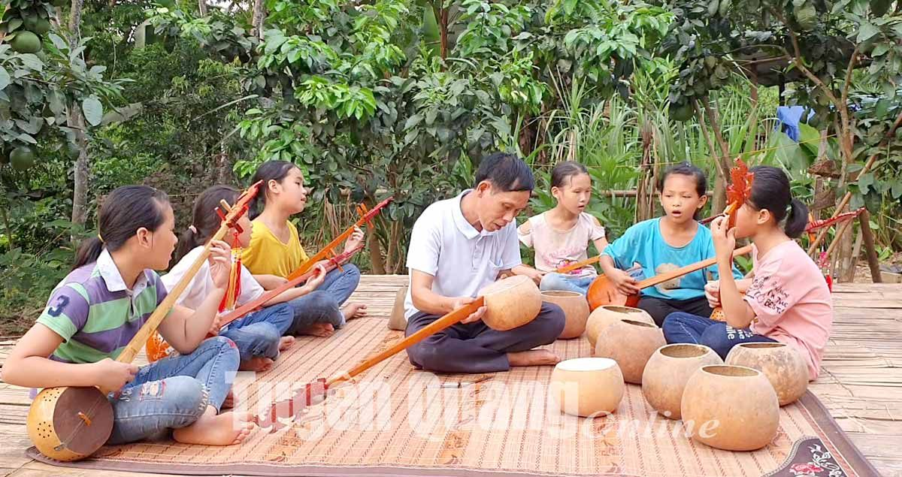

Người trẻ cần làm gì?
Để giữ gìn bản sắc văn hóa Việt Nam
Trách nhiệm của mỗi người
Giữ gìn bản sắc văn hóa là trách nhiệm chung của toàn xã hội, trong đó thế hệ trẻ đóng vai trò quan trọng. Việc này không nhất thiết phải bắt đầu từ những hoạt động lớn lao mà có thể được thực hiện thông qua những hành động gần gũi trong cuộc sống:
Trong sinh hoạt
Sử dụng tiếng Việt đúng mực, tôn trọng các giá trị gia đình, giữ gìn phong tục tốt đẹp và ứng xử văn minh với mọi người.
Trong học tập
Chủ động tìm hiểu lịch sử, văn hóa, di sản và những truyền thống tốt đẹp của quê hương, đất nước.
Trên không gian mạng
Chia sẻ những nội dung tích cực về văn hóa Việt Nam, giới thiệu các nét đẹp truyền thống và có ý thức chọn lọc thông tin.
Trong giao lưu văn hóa
Cởi mở tiếp thu những giá trị tiến bộ của thế giới nhưng không chạy theo xu hướng một cách thiếu chọn lọc hoặc xem nhẹ văn hóa dân tộc.
Trong các hoạt động cộng đồng
Tích cực tham gia lễ hội, hoạt động văn hóa, tham quan di tích lịch sử và góp phần quảng bá hình ảnh Việt Nam đến bạn bè quốc tế.
Đối với người trẻ
Quan trọng hơn cả là biết trân trọng cội nguồn, có ý thức lựa chọn và tiếp nối những giá trị tốt đẹp, đồng thời sáng tạo để văn hóa dân tộc ngày càng gần gũi với cuộc sống.



Bấm vào ảnh để xem phóng to.